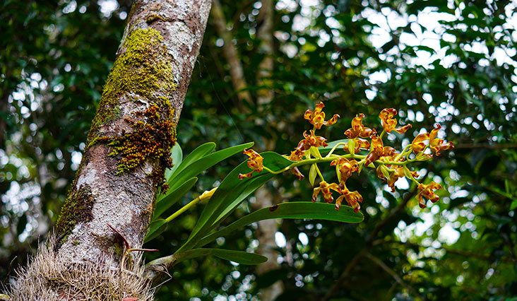
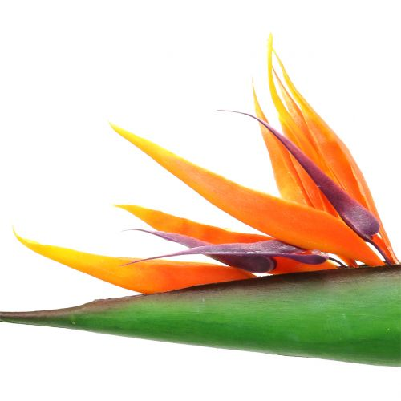
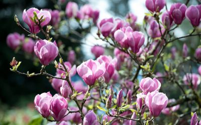
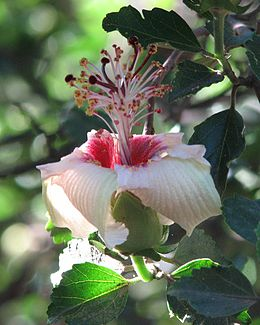
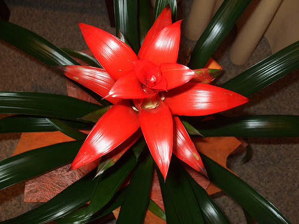

Orchidea
Az orchideák már mintegy 100 millió éve élnek a Földön, a 18. század óta pedig szobanövényként is nagy népszerűségnek örvendenek. Ehhez minden bizonnyal az is hozzájárult, hogy a gazdagon virágzó száruk több hónapon keresztül gyönyörködteti a szemünket. Az orchideák különböző feltételek között termeszthetők, mivel a természetben az Egyenlítő körüli trópusoktól a mérsékelt övezeten keresztül egészen az arktikus tundrákig fellelhetők. De mielőtt arról beszélnénk, hogyan vásároljunk orchideát, hova tegyük, és hogyan ápoljuk, vessünk egy pillantást ezekre a büszke szépségekre a botanika szempontjából. Az „orchidea” név a kosborfélék, latinul az Orchidaceae család nevéből származik. A családot mintegy ezer nemzetség és 30 ezer faj alkotja. A kosborfélék genetikai instabilitása nemcsak a fajok, hanem a nemzetségek közötti keresztezést is lehetővé tette, amiben az orchidea-termesztők végtelen örömüket lelik, ezért jelenleg több mint 100 ezer hibrid és orchidea kultivár létezik a világon, miközben folyamatosan újak és újak jönnek létre.

Strelitzia paradicsommadár
Alakítsa át lakókörnyezetét az egzotikumok birodalmává ezzel az exkluzív paradicsommadár virággal! A virágkötő trópusi királynőjeként és az egzotikus paradicsom megtestesítőjeként ez az extravagáns szépség egyedi virágformájával tündököl. Semmiben sem rosszabb, mint a természetes példaképed. A művirágot egy dekoratív, mélyzöld levél borítja, tetején lenyűgöző, sokszínű virágzik. A virágzat háromszoros szirmpárból áll. A nagyobb fellevelek mélynarancsban, míg a kisebbek és közepes méretűek ugyanolyan intenzív ibolyában csillognak. Ennek a virágnak az eredeti szerkezete egzotikus madárfajok megjelenésére emlékeztet, ezért kapta a népnyelvi nevét. A Strelitzia reginae botanikai nemzetségnevet azonban eredetileg egy brit királynő tiszteletére választották.Használja ki ennek a dekoratív virágnak az exkluzivitását, és adjon színes akcentust dekorációja egzotikus hangulatához. A különösen hosszú Strelitzia különösen jól mutat egy magaspadlós üvegvázában.

Magnólia (liliomfa)
A magnólia – más néven liliomfa – vitathatatlanul a tavasz egyik legfeltűnőbb növénye. Hatalmas, makulátlan virágai olyan ámulatba ejtő látványt nyújtanak a kopár hónapok után, hogy – még a rövid ideig tartó virágzás ellenére is – érdemes legalább egy magnólia fácskát nevelgetned a kertedben. Magassága miatt ugyan faként tekintünk rá, de valójában cserje, mert törzse a föld felett nem sokkal elágazik. Tulipánfának is hívják, tévesen. Ez a név egy másik, szintén a magnóliafélék családjába tartozó növényt illet. A kertészetekben sokféle liliomfa közül választhatsz. Ezek virágszínükben, a virágzás idejében és méretükben is eltérhetnek egymástól. A legtöbbjük lombhullató, de akad közöttük örökzöld is. A legtöbb magnólia virágzása április-májusra esik. A virágok színe a fajtától függően lehet fehér, világos és sötét rózsaszín, bíborszínű, valamint ezek keveréke. Egyes fajták a tavaszi virágzás után nyári másodvirágzással is megörvendeztetnek.

Hibiszkusz
A hibiszkusz vagy mályvacserje (Hibiscus) a mályvavirágúak (Malvales) közé tartozó mályvafélék (Malvaceae) egyik legváltozatosabb nemzetsége mintegy 200-300 fajjal, melyek közül feltűnő virágai miatt többet szerte a világon dísznövényként termesztenek. Az Ázsiából származó növényt Jean Robin hozta Európába, ő ültette el először a párizsi királyi füvészkertbe. Egyes fajai tipikus özönnövények, másokat az ember telepített meg szerte a világon. A fajok többsége a trópusokon, szubtrópusokon és a meleg mérsékelt éghajlatú területeken él, közöttük akadnak egyévesek és évelők, fás- és lágyszárúak, lombhullatók és örökzöldek is.

Kála
Őshazája a Afrika. Az örökzöld fajok Afrika nyugati részéről, a virágzó színes hibridek Afrika keleti részéről származnak. Mára a nemesítéseknek köszönhetően több faját is megtalálhatjuk, így különböző színekben pompázhatnak lakásunkban. A fehéren kívül sárga, lila, rózsaszín, bordó, orgona, lazac, narancs színben is találunk kála virágot. A nagy fehér virágúak május környékén kezdenek virágozni, a színes hibridek pedig nyáron hoznak virágokat. A kála 1-2,5 méterig is megnőhet, levelei 15-45 cm közöttiek. A levelek tölcsér alakúak, a virágok buroklevéllel körülfogott torzsavirágzatúak. A virágok 2-6 hétig is megmaradnak.

Guzmália
Guzmánia A lakberendezők elengedhetetlennek tartják a modern dekorációs terveik megvalósításához, de a kezdő szobakertészek elriadnak tőle, mert úgy hiszik, hogy ennek a gyakran színpompás növénynek a nevelése meghaladja a képességeiket. De ebben tévednek, hiszen kevés növényfaj van, amelyiknek egyszerűbb lenne a gondozása, mint a broméliának.Télen igazán szépen mutat: ekkor hozza színes felleveleit a tőlevélrózsa közepén. A levelei puhák, fényesek és sima szélűek, elérhetik a 45 cm hosszúságot és a 3 cm szélességet is. A guzmánia virágzata apró, sárga virágokból áll, amit körbevesznek a narancs vagy vörös vagy rózsás árnyalatú fellevelek.
